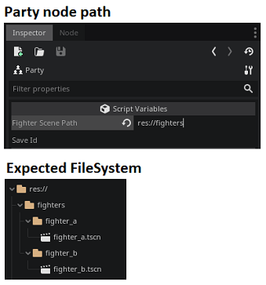

extends node
Collection of associated Fighters as children.
The folder where other folders containing your Fighter scenes can be found
Example Path:

-
Returns an array representing Fighter children to preserve their state. Each entry of the array is another array of size 2, where the first item is the save_id of the Fighter and the second item is a dictionary returned by the Fighter's save_data().
Restores children Fighters and their state. This method assumes that save_array is in the same format that is returned by save_data().